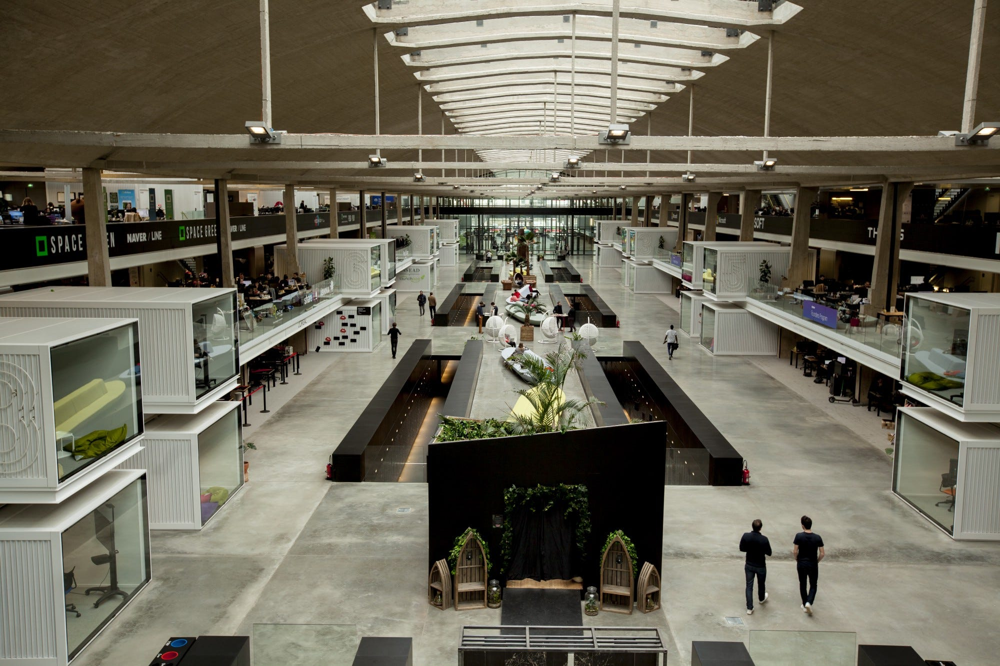

Mon parcours professionnel

Expériences professionnelles
R&D Engineer - (2024 - 2025)
- Exploration de nouvelles approches pour améliorer la précision des modèles.
- Fine-tuning et évaluation de modèles Transformers.
- Optimisation des performances et réduction des coûts de calcul (PEFT).
- Développement backend avec Django.
- Conception et gestion de datasets : nettoyage des données et visualisation.
Machine Learning Software Engineer - (2023 - 2024)
- Déploiement et intégration de LLMs avec Hugging Face.
- Développement de systèmes RAG intégrant embeddings, retrieval et NLP.
- Optimisation des prompts.
- Développement et containérisation d’applications avec FastAPI et Docker.
- Évaluation des modèles et benchmarking avec Ragas et SKlearn.
Langues Parlées
- Français – C2 (Natif)
- Anglais – C1 (Fluent)
- Mandarin – B1 (Intermédiaire)